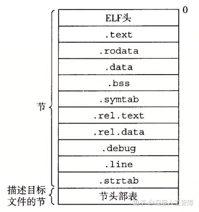
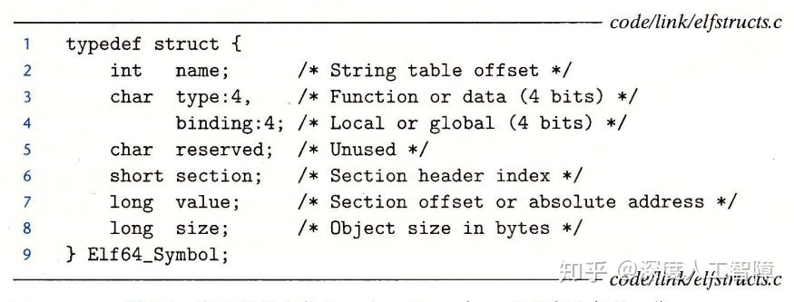
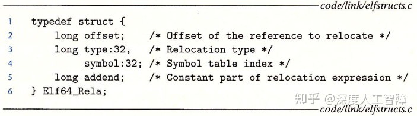
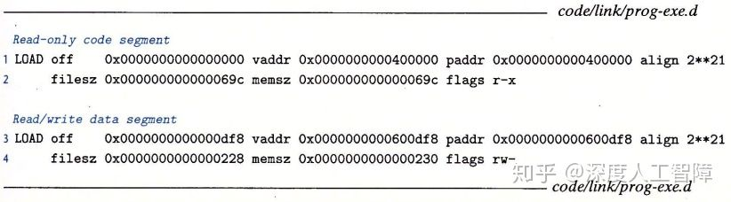

链接（Linking）是将各种代码和数据片段收集并组合成一个单一的文件的过程。合成的文件可以被加载（load）到内存中执行。 该过程由链接器（Linker）程序自动执行。链接存在三种类型：
链接的存在，使得分离编译（Separate Compilation）成为可能。 一个大型应用程序可以分解成若干个小的模块，只需要对这些模块进行修改编译，然后通过链接器将其组合成大的可执行文件就行。
本章讨论的范围从传统的静态链接（static linking），到加载时动态链接（dynamic linking）共享库（shared library），再到运行时动态链接共享库。 CMU的ICS+课程不要求动态链接，于是本整理的关注点也多在静态链接。本文使用的环境：运行Linux的x86-64系统，使用标准的ELF-64目标文件格式。 一个重要的工具是readelf命令，可惜我不会。
我们可以通过gcc -c a.c生成可重定位目标文件a.o（relocatable object file）。 而把所有所需的可重定位目标文件完全链接生成的可加载和运行的文件叫做可执行目标文件（executable object file）。 比如gcc main.o func.o -o out后便可./out了。以上这个行为我们称之为静态链接（static linking）。
为了生成可执行文件，链接器要完成两项重要工作：
7.1.1已经讲过了可重定位目标文件以及可执行目标文件，还有一种目标文件叫做共享目标文件（shared object file），这是一种特殊类型的可重定位目标文件，可以在加载时或运行时被动态地加载进内存并链接。
目标文件是按照特定的目标文件格式进行组织的。 Windews中使用可移植可执行（Portable Executable，PE）格式，Max OS-X使用Mach-O格式，x86-64 Linux和Unix使用可执行可链接格式（Executable and Linkable Format，ELF）。 csapp采用的是ELF格式。利用readelf命令可以分析目标文件。

上图是可重定位目标文件的ELF格式，接下来逐一解释每个节（section）。
之前提过符号（symbol）是函数、全局变量和静态变量。根据符号定义和引用的情况，还可以将其分成以下类型：
符号表.symtab中的每个条目具有以下格式

section说明该符号保存在哪个节中。特别的，有三个伪节（Pseudosection）：ABS：不该被重定位的符号；UNDEF：未定义的符号，即在当前可重定位目标文件中引用，但在别的地方定义的符号； COMMON：表示未被分配位置的未初始化的全局变量，此时value给出对齐要求，size给出最小的大小。.bss与COMMON的区别约定如下：
在了解符号表后，可以给出更明确的定义：链接器符号解析是将每个符号引用与输入的所有可重定位目标文件的符号表中的一个确定的符号定义关联起来。 对于局部符号和静态符号，以上工作比较容易。但是对于全局符号，可能会碰到在多个可重定位目标文件中定义相同名字的全局符号。于是符号解析的关键在于解决该冲突。
编译器会向汇编器输出每个全局符号是强（Strong）还是弱（Weak），而汇编器会把这些信息隐式编码在可重定位目标文件的符号表中。 函数和已初始化的全局符号是强符号，未初始化的全局符号是弱符号。然后链接器通过以下规则来处理在多个可重定位目标文件中重复定义的全局符号：
我们从编译器的角度来看，当编译器看到一个弱全局符号时，它并不确定是否会在别的文件中对该符号进行定义，也无法确定链接器会采用多重定义的哪个定义。 所以编译器将未初始化的全局符号放在COMMON表中，让链接器去决定。 而当全局符号初始化为0时，它就是一个强全局符号，根据规则1可知该符号是唯一的，所以编译器可以直接将其分配到.bss中。 而对于静态变量，由于其符号也是唯一的，所以编译器也可以直接将其放到.bss或.data中。
命令行中的文件顺序是有要求的。但是这个符合直观认识，就直接举个例子。比如p.o -> libx.a -> liby.a且liby.a -> libx.a -> p.o。“a -> b”意思指a中引用的全局符号在b中定义。 输入命令行的正确顺序为：gcc p.o libx.a liby.a libx.a
当链接器完成符号解析时，所有符号引用都能和一个符号定义关联起来了。此时链接器直到代码和数据节的确切大小，准备开始重定位工作。 也就是合并节以及分配运行时的地址。具体如下：
当汇编器生成目标模块时，它无法确定数据和代码最终会放在内存的什么位置，也无法确定该模块引用外部定义的函数和全局变量的位置，所以汇编器先用占位符来占领位置，然后对地址未知的符号产生一个重定位条目（Relocation Entry）。 代码的重定位条目会保存在.rel.text节中，已初始化数据的重定位条目会保存在rel.data节中。重定位条目的数据结构如下所示

其中，offset表示要修改符号引用的内存地址；type表示重定位的类型，有R_X86_64_PC32（32位相对地址）和R_X86_64_32（32位绝对地址）；symbol是符号表的索引值，表示引用的符号，可以通过该符号获得真实的内存地址； addend是一个有符号常数，有些重定位需要使用这个参数来修改引用位置。
看书P691-P695，详细地讲了一个例子（不想动脑子了
通过以上符号解析和重定位过程，链接器已将可重定位目标文件和库合并成一个可执行目标文件了。目标文件的ELF格式如下所示：
段头部表（Segment Header Table）：包括页大小、虚拟地址内存段（节）、段大小等等。 描述了可执行文件连续的片到连续的内存段的映射关系，如下图所示是通过OBJDUMP显示的prog的段头部表

在可执行目标文件中，根据不同数据节对读写执行的不同要求，将不同的数据节分成了两个段：代码段和数据段。 其中代码段包含ELF头、段头部表、.init、.text和.rodata，数据段包括.data和.bss。 然后段头部表中就描述了代码段和数据段到内存段的映射关系，其中off是目标文件中的偏移，表示要从目标文件的什么位置开始读取该段； vaddr/paddr是内存地址，表示要将该段加载到的内存地址；align是对齐要求；filesz是目标文件中的段大小，则通过off和filesz就能确定我们要加载的段的内容； memsz是内存中的段大小，表示我们养将目标文件中的该段加载到多大的内存空间中；flags表示该段运行时的访问权限。
比如第1行、第2行描述的就是代码段，表示将目标文件中从0x0开始的0x69c个字节数据保存到从0x400000开始的，大小为0x69c字节的内存空间中，并具有读和可执行权限。 第3行、第4行描述的是数据段，表示将目标文件从0xdf8开始的0x228个字节数据保存到从0x600df8开始的，大小为0x230字节的内存空间中，并具有读写权限。
为了使得程序执行时，目标文件中的段能高效地传送到内存中，要求vaddr mod align = off mod align
当我得到可执行目标文件prog时，我们可以在shell中输入./prog。
由于prog不是内置的shell命令，所以shell会认为prog是一个可执行目标文件，就通过调用execve函数来调用内核中的加载器（Loader）。 则加载器会在可执行目标文件的段头部表的引导下，将可执行文件中的数据段和代码段复制到对应的内存位置，然后加载器会创建如下运行时内存映射：

注意：链接器通常会使用地址空间布局随机化（ASLR）来修改堆、共享库和栈的地址，但是会保持三者相对位置不变。
随后加载器会跳转到程序的入口点，也就是_start函数的地址。然后_start函数调用系统启动函数__libc_start_main，该函数初始化执行环境，并调用用户层的main函数。 其中，_start定义在系统目标文件ctrl.o，__libc_start_main定义在libc.so中。
静态库具有以下缺点：需要定期维护和更新，并且几乎所有C程序都会使用标准I/O函数，则运行时这些函数的代码会被复制到每个运行进程的文本段中，占用大量的内存资源。
为了解决静态库的问题提出了共享库（Shared Library），它是一个目标模块，不会在产生可执行目标文件时将数据段和代码段复制到可执行目标文件中进行静态链接，而是等到程序要加载时或要运行时才进行链接。 我们可以提供最新的共享库，使得可执行目标文件可以直接和最新的共享库在加载或运行时链接，无需重新产生可执行目标文件。 共享库由动态链接器（Dynamic Linker）加载到任意的内存地址，并和一个在内存中的程序链接起来。该过程称为动态链接（Dynamic Linking）。 动态链接器本身就是一个共享目标，Linux中为ld-linux.so。
共享库的“共享”具有两层含义：
具体的实例以及背后的PIC机制，这里就不再讨论了。
Linux链接器支持库打桩（Library Interpositioning）技术，允许你截获对共享库函数的调用，替换成自己的代码。 基本思想为：创建一个与共享库函数相同函数原型的包装函数，使用库打桩技术来欺骗系统调用包装函数，而不是调用目标函数。 包含：编译时打桩、链接时打桩以及运行时打桩。这里也不再详细讨论了。